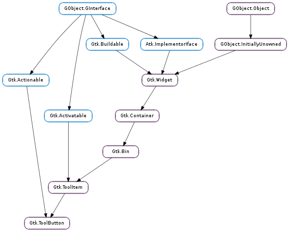

| Subclasses: | Gtk.MenuToolButton, Gtk.ToggleToolButton |
|---|
| static | new(icon_widget, label) |
| static | new_from_stock(stock_id) |
| get_icon_name() | |
| get_icon_widget() | |
| get_label() | |
| get_label_widget() | |
| get_stock_id() | |
| get_use_underline() | |
| set_icon_name(icon_name) | |
| set_icon_widget(icon_widget) | |
| set_label(label) | |
| set_label_widget(label_widget) | |
| set_stock_id(stock_id) | |
| set_use_underline(use_underline) |
| Name | Type | Flags | Description |
|---|---|---|---|
| icon-name | str | r/w | The name of the themed icon displayed on the item |
| icon-widget | Gtk.Widget | r/w | Icon widget to display in the item |
| label | str | r/w | Text to show in the item. |
| label-widget | Gtk.Widget | r/w | Widget to use as the item label |
| stock-id | str | r/w | The stock icon displayed on the item |
| use-underline | bool | r/w | If set, an underline in the label property indicates that the next character should be used for the mnemonic accelerator key in the overflow menu |
| Name | Parameters | Return | Description |
|---|---|---|---|
| clicked | This signal is emitted when the tool button is clicked with the mouse or activated with the keyboard. |
| Name | Type | Access |
|---|---|---|
| parent | Gtk.ToolItem | r |
Bases: Gtk.ToolItem, Gtk.Actionable
Gtk.ToolButton s are Gtk.ToolItems containing buttons.
Use Gtk.ToolButton.new () to create a new Gtk.ToolButton.
The label of a Gtk.ToolButton is determined by the properties Gtk.ToolButton :label-widget, Gtk.ToolButton :label, and Gtk.ToolButton :stock-id. If Gtk.ToolButton :label-widget is non-None, then that widget is used as the label. Otherwise, if Gtk.ToolButton :label is non-None, that string is used as the label. Otherwise, if Gtk.ToolButton :stock-id is non-None, the label is determined by the stock item. Otherwise, the button does not have a label.
The icon of a Gtk.ToolButton is determined by the properties Gtk.ToolButton :icon-widget and Gtk.ToolButton :stock-id. If Gtk.ToolButton :icon-widget is non-None, then that widget is used as the icon. Otherwise, if Gtk.ToolButton :stock-id is non-None, the icon is determined by the stock item. Otherwise, the button does not have a icon.
| Parameters: | |
|---|---|
| Returns: | A new Gtk.ToolButton |
| Return type: |
Creates a new Gtk.ToolButton using icon_widget as contents and label as label.
| Parameters: | stock_id (str) – the name of the stock item |
|---|---|
| Returns: | A new Gtk.ToolButton |
| Return type: | Gtk.ToolItem |
Creates a new Gtk.ToolButton containing the image and text from a stock item. Some stock ids have preprocessor macros like Gtk.STOCK_OK and Gtk.STOCK_APPLY.
It is an error if stock_id is not a name of a stock item.
| Returns: | the icon name or None if the tool button has no themed icon |
|---|---|
| Return type: | str |
Returns the name of the themed icon for the tool button, see Gtk.ToolButton.set_icon_name ().
| Returns: | The widget used as icon on button, or None. |
|---|---|
| Return type: | Gtk.Widget |
Return the widget used as icon widget on button. See Gtk.ToolButton.set_icon_widget ().
| Returns: | The label, or None |
|---|---|
| Return type: | str |
Returns the label used by the tool button, or None if the tool button doesn’t have a label. or uses a the label from a stock item. The returned string is owned by GTK+, and must not be modified or freed.
| Returns: | The widget used as label on button, or None. |
|---|---|
| Return type: | Gtk.Widget |
Returns the widget used as label on button. See Gtk.ToolButton.set_label_widget ().
| Returns: | the name of the stock item for button. |
|---|---|
| Return type: | str |
Returns the name of the stock item. See Gtk.ToolButton.set_stock_id (). The returned string is owned by GTK+ and must not be freed or modifed.
| Returns: | True if underscores in the label property are used as mnemonics on menu items on the overflow menu. |
|---|---|
| Return type: | bool |
Returns whether underscores in the label property are used as mnemonics on menu items on the overflow menu. See Gtk.ToolButton.set_use_underline ().
| Parameters: | icon_name (str or None) – the name of the themed icon |
|---|
Sets the icon for the tool button from a named themed icon. See the docs for Gtk.IconTheme for more details. The “icon_name” property only has an effect if not overridden by non-None “label”, “icon_widget” and “stock_id” properties.
| Parameters: | icon_widget (Gtk.Widget or None) – the widget used as icon, or None |
|---|
Sets icon as the widget used as icon on button. If icon_widget is None the icon is determined by the “stock_id” property. If the “stock_id” property is also None, button will not have an icon.
| Parameters: | label (str or None) – a string that will be used as label, or None. |
|---|
Sets label as the label used for the tool button. The “label” property only has an effect if not overridden by a non-None “label_widget” property. If both the “label_widget” and “label” properties are None, the label is determined by the “stock_id” property. If the “stock_id” property is also None, button will not have a label.
| Parameters: | label_widget (Gtk.Widget or None) – the widget used as label, or None |
|---|
Sets label_widget as the widget that will be used as the label for button. If label_widget is None the “label” property is used as label. If “label” is also None, the label in the stock item determined by the “stock_id” property is used as label. If “stock_id” is also None, button does not have a label.
| Parameters: | stock_id (str or None) – a name of a stock item, or None |
|---|
Sets the name of the stock item. See Gtk.ToolButton.new_from_stock (). The stock_id property only has an effect if not overridden by non-None “label” and “icon_widget” properties.
| Parameters: | use_underline (bool) – whether the button label has the form “_Open” |
|---|
If set, an underline in the label property indicates that the next character should be used for the mnemonic accelerator key in the overflow menu. For example, if the label property is “_Open” and use_underline is True, the label on the tool button will be “Open” and the item on the overflow menu will have an underlined ‘O’.
Labels shown on tool buttons never have mnemonics on them; this property only affects the menu item on the overflow menu.